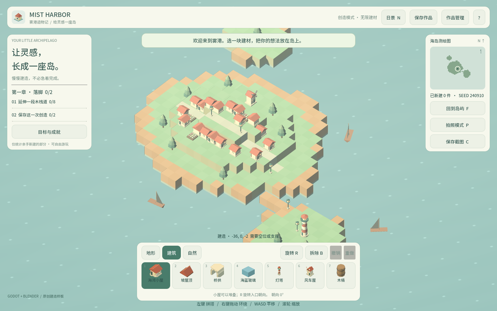
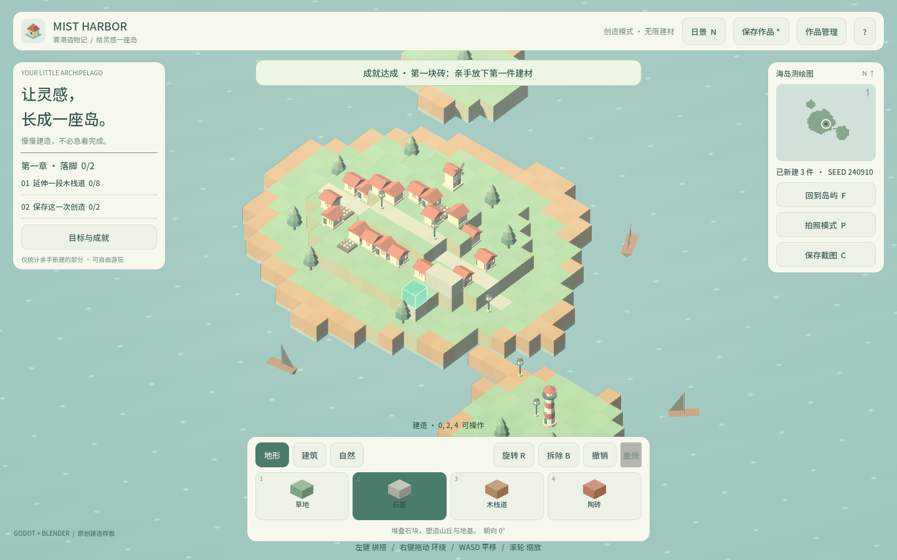
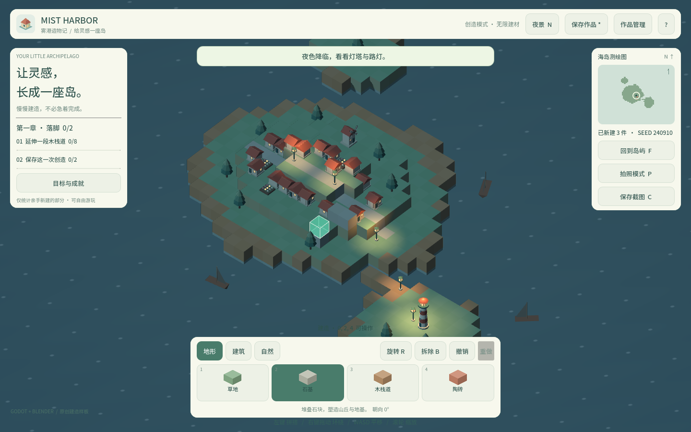

卷 2 · 第 12 章 昼夜与小地图：一次状态切换与一张俯视图
本章目标：读懂"一个布尔值如何驱动整套视觉切换"，以及
60 行的小地图如何把 3D 世界压成 2D 俯视图（含"取最高点"的关键技巧）。
对应任务：T39（昼夜）/ T18（小地图） | 对应文件：build_world.gd/minimap.gd
12.1 昼夜：一个布尔值，一次整树重建
func set_night(value: bool) -> void:
night = value
# 1. 改环境：背景色 / 环境光 / 雾
# 2. 改太阳：夜色更冷更弱
# 3. 改海面 shader 参数
# 4. needs_rebuild = true → 下一次 rebuild 时给 lamp/beacon 挂 OmniLight3D| 元素 | 白天 | 夜晚 |
|---|---|---|
| --- | --- | --- |
| 环境光/背景 | 明亮暖白 | 深蓝低亮 |
sun | #ffe6bd，强 | 冷色，弱 |
| 海面 shader | 浅水/深水高饱和 | 暗色、低对比 |
| 灯光道具 | 无额外光源 | lamp / beacon 挂 OmniLight3D（暖橙 #ffbd70） |
| 小地图底图 | #d0e1d7 | 不变（保持可读） |
关键设计：为什么改灯要"整树重建"？
因为灯光是挂在道具节点上的，而道具树在 rebuild() 时全量重建。
与其写一套"遍历加灯/去灯"的逻辑，不如让重建时读 night 决定要不要挂——
状态单一来源，不会出现"漏关的灯"。
📌 这正是第 10 章"全量重建"的红利：复杂状态切换变得极其简单、不会有残留。
12.2 小地图：3D → 2D 的降维
minimap.gd 只有 37 行，核心在 _draw()：
var tops: Dictionary = {}
for cell in model.cells:
var key := Vector2i(cell.x, cell.z)
if not tops.has(key) or cell.y > tops[key].y:
tops[key] = cell # ← 同一 (x,z) 只保留最高的那一格
for cell in tops.values():
var point := center + Vector2(cell.x, cell.z) * scale_value
var color := Color("87a78c") if item.get("natural") else Color("bd7e64")
draw_rect(Rect2(point, Vector2.ONE * scale_value), color)| 技巧 | 说明 |
|---|---|
| --- | --- |
| 取最高点 | 俯视图只需"这一列最上面是什么"，(x,z) 作 key 保留最大 y |
| 两色区分 | 自然（草/木/花）用绿 #87a78c，人工建造用砖红 #bd7e64 |
| 固定比例 | scale_value = 2.15，把 ±25 的世界压进 158×124 的面板 |
| 焦点指示 | 白色圆环 + 深色圆点标出相机 focus，并画一条指北线 |
MOUSE_FILTER_IGNORE | 小地图不拦截鼠标 → 不会挡住下方世界的点击 |
刷新时机：不是每帧重画，而是相机移动超过阈值时：
if minimap.focus_position.distance_squared_to(focus) > 0.02:
minimap.focus_position = focus
minimap.queue_redraw()世界改动时也会重画（_refresh_ui 里）。
12.3 两个"看不见的"性能细节
queue_redraw()而非每帧 draw：Control 的_draw只在需要时调用，重画是显式的- 距离平方比较：
distance_squared_to避免开方，是 Godot 里常见的优化习惯
这两点加起来，让一个每帧都在移动的相机，不会让小地图成为瓶颈。
🌩 在云端 agent（web-cb）里是什么样
| 🖥 本地路线 | 🌩 云端 agent（web-cb） | |
|---|---|---|
| --- | --- | --- |
| 昼夜验收 | 截图对比 | 同；但更推荐用快照字段 night 断言 + 一张截图 |
| 小地图 | 本地 GPU 绘制 | WebGL 下 draw_rect 走 2D 批次，同样轻量 |
| 注意 | 老显卡可能慢 | CanvasItem 绘制在云端几乎无差异 |
| 排错 | 看画面 | 若小地图空白：先查 model 是否为 null（代码里 if model == null: return） |
🌩 云端验收小贴士：小地图这类"确定性绘制"最适合做像素级回归——
它不依赖 3D 渲染管线，不同机器的结果应当一致。
12.4 常见坑速查（本章）
| 现象 | 原因 | 处理 |
|---|---|---|
| --- | --- | --- |
| 切到夜晚但灯没亮 | 灯只在重建时挂 | 确认 needs_rebuild 被置位并真的 rebuild 了 |
| 夜晚有残留亮光 | 手动改过某处而没走 set_night | 所有昼夜相关改动收敛到 set_night |
| 小地图空白 | model 为 null | 检查 setup() 是否赋值 |
| 小地图挡住点击 | 忘了 MOUSE_FILTER_IGNORE | 加上 |
| 小地图不刷新 | 没调 queue_redraw() | 世界改动与相机移动都要触发 |
| 高层方块被低层覆盖 | 没取最高点 | 必须按 (x,z) 保留最大 y |
12.5 本章作业
- 说明为什么"取最高点"要用
(x, cell.z)作 key 而不是完整Vector3i - 解释
set_night()为什么选择"整树重建"而不是遍历加灯，列出至少两个好处 - 把
scale_value从2.15改成3.0，观察小地图溢出情况（然后改回） - 给小地图加第三种颜色（例如水域用蓝），说明你会改哪几行
🎓 教学提示（给教师 / 直播主）
- 概念锚点：降维——把三维数据压成二维可视化，关键是先决定"丢掉哪个维度"。
- 课堂演示：造一根 5 格高的柱子，看小地图只显示一个点（取最高点的直观证明）。
- 高频误解：学生以为小地图是"第二个摄像机渲染"。强调它是
_draw()画的 2D 矩形。 - 讨论题：如果要显示"地下/洞穴"，取最高点的策略该怎么改？
- 批改要点：作业 2 要答出"状态单一来源 / 不会有残留"。
🖼 本章图集



📹 录屏分镜（8 分钟）
| 时间 | 画面 | 解说词要点 |
|---|---|---|
| --- | --- | --- |
| 00:00–01:30 | 按 N 切昼夜，对比环境/太阳/海面 | "一个布尔值，整棵树重来。" |
| 01:30–03:00 | 夜间灯光道具亮起 | "灯是重建时挂的，不是遍历加的。" |
| 03:00–05:00 | 小地图代码逐行讲（取最高点是高潮） | "同一列只留最上面那个。" |
| 05:00–06:30 | 造高柱看小地图只显示一点 | |
| 06:30–08:00 | 刷新时机与两个性能细节 |
🎬 视频位（待录制）
把录好的视频放到course/media/video/12/（mp4 / webm / mov），重新执行 python tools/course_build.py 即会自动内嵌；首帧默认用本章第一张截图作为封面。分镜脚本见上一节。🖼 配图清单
| 文件名 | 内容 | 生成方式 |
|---|---|---|
| --- | --- | --- |
12-day-minimap.png | 白天 + 小地图（含焦点环） | python tools/course_capture.py --chapter 12 |
12-night-minimap.png | 夜晚 + 灯光 + 小地图两色分区 | 同上 |
12-minimap-built.png | 放置若干地形格后小地图同步变化 | 同上 |
🎥 直播脚本（L3 片段，10 分钟）
- 挑战："小地图只有 37 行，但它有一个 bug 隐患——猜是什么？"（答：没取最高点时高柱会闪）
- 演示：临时去掉取最高点逻辑，造柱子看异常
- 互动：让观众设计一个"显示楼层数"的小地图方案
- 收尾：预告缩略图与成就
❓ 本章 FAQ
Q：小地图能点击跳转吗？
A：当前版本是只读的（MOUSE_FILTER_IGNORE）。要加跳转只需改成接收点击并反算世界坐标。
Q：为什么夜间不改小地图底色？
A：小地图是信息图不是"画面"，始终用高对比底色保证可读性——这是 HUD 设计的常识。
Q：昼夜会影响存档吗？
A：night 是世界状态的一部分，会随存档保存/恢复。